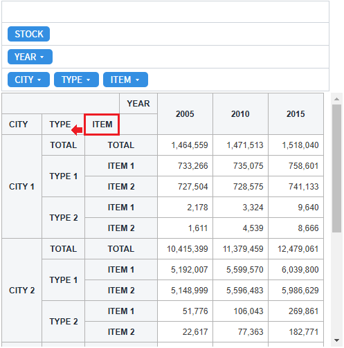
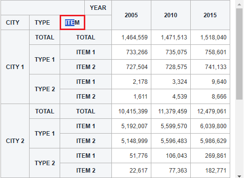
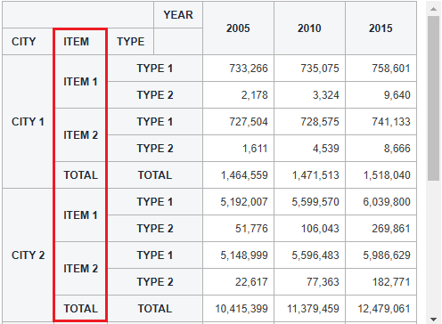
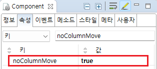

Pivot의 'noColumnMove' 속성을 사용하여 Y축의 헤더 이동 사용 여부를 설정한 예제입니다.
Y축 헤더 컬럼 이동 불가능
Y축 헤더 컬럼 이동 가능
예제 영역 'Y축 헤더 컬럼 이동 불가능'에서 테스트합니다.1
STEP 1: 마우스로 드래그 앤 드롭하여 Y축 헤더 컬럼을 이동합니다.
Y축 헤더 'ITEM'을 마우스 드래그하여 Y축 헤더 'TYPE' 위에서 드롭합니다.
Image 1.브라우저(Chrome) 실행 예시

2
STEP 2: 실행 결과를 확인합니다.
문자열이 선택되고 컬럼은 이동되지 않습니다.
Image 2.브라우저(Chrome) 실행 예시

예제 영역 '(기본설정) Y축 헤더 컬럼 이동 가능'에서 테스트합니다.1
STEP 1: 마우스로 드래그 앤 드롭하여 Y축 헤더 컬럼을 이동 합니다.
2
Y축 헤더 'ITEM'을 마우스 드래그하여 Y축 헤더 'TYPE' 위에서 드롭합니다.
Image 3.브라우저(Chrome) 실행 예시
3
STEP 2: 실행 결과를 확인합니다.
Y축 헤더 컬럼 'ITEM'이 이동되어 컬럼 'TYPE' 앞쪽에 위치됩니다.
Image 4.브라우저(Chrome) 실행 예시

1
속성을 설정합니다.
[필수] noColumnMove="true"
[default:false, true] pivot data영역의 header column을 마우스로 드래그하여 컬럼을 이동을 금지합니다.
Image 5.웹스퀘어 스튜디오의 Component View - 속성 설정 예시

Example 1.Source
<!-- pivot 의 소스 본문 예시 --> <w2:pivot noColumnMove="true" id="piv_ex01"> <!-- 중략 --> </w2:pivot>
noColumnMove